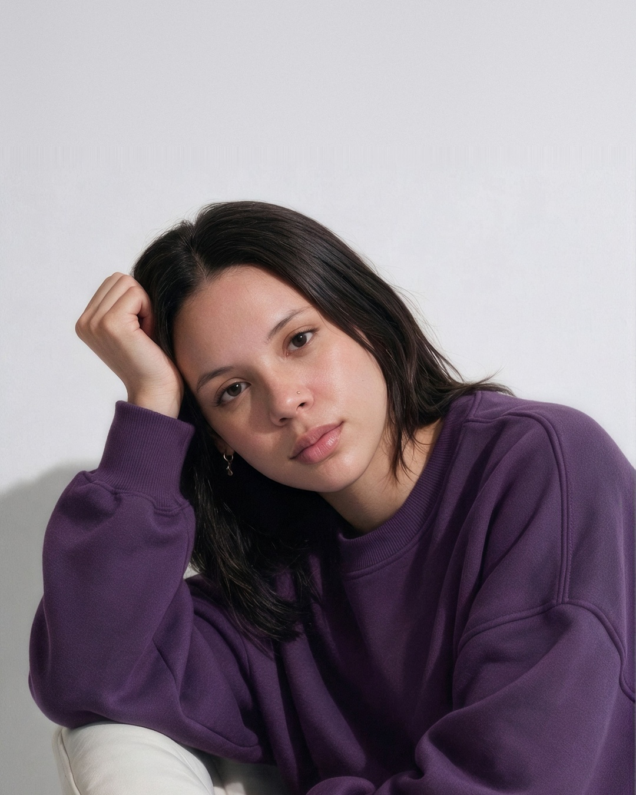
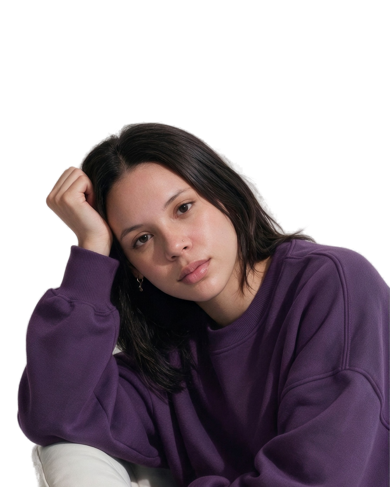
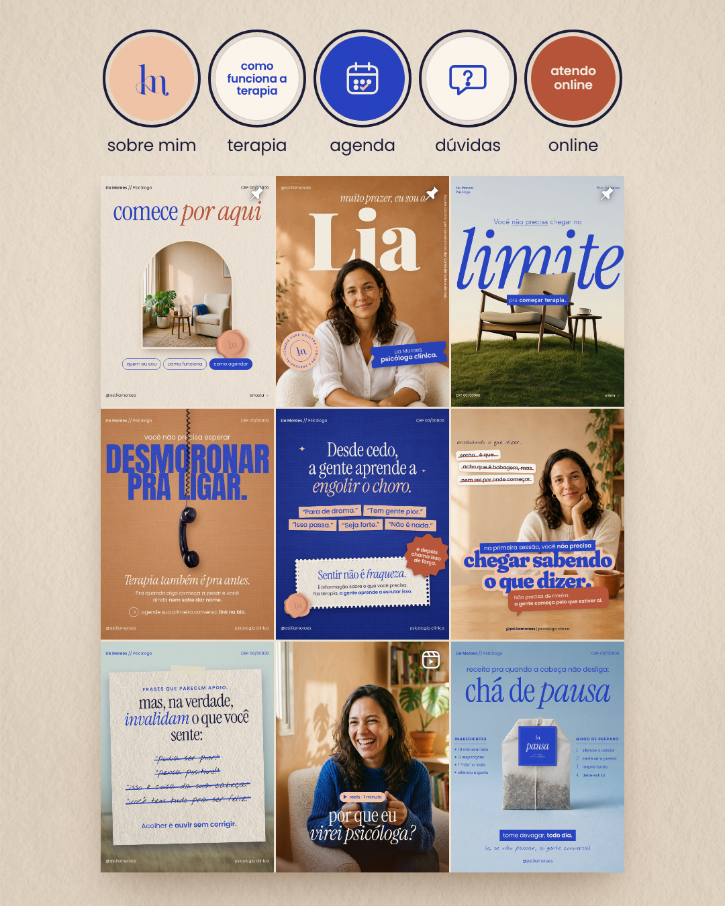

minha cliente queria um feed
queacolhe

e eu entreguei isso →

primeiro, ocarrossel
8 lâminas, do gancho ao convite
depois, ofeed

e osposts
6 posts, cada um com a sua ideia
FICHA DE PRIMEIRA SESSÃO
paciente:sua marca
queixa principal
☑feed bonito que ninguém lembra
☑post que não chama cliente
☐tá tudo ótimo (a gente sabe que não)
conduta: identidade + social media
retorno: me chama na dm